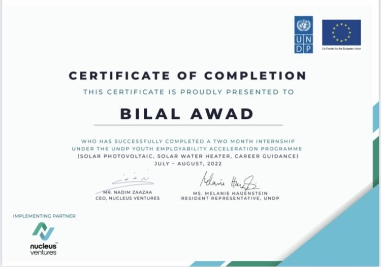
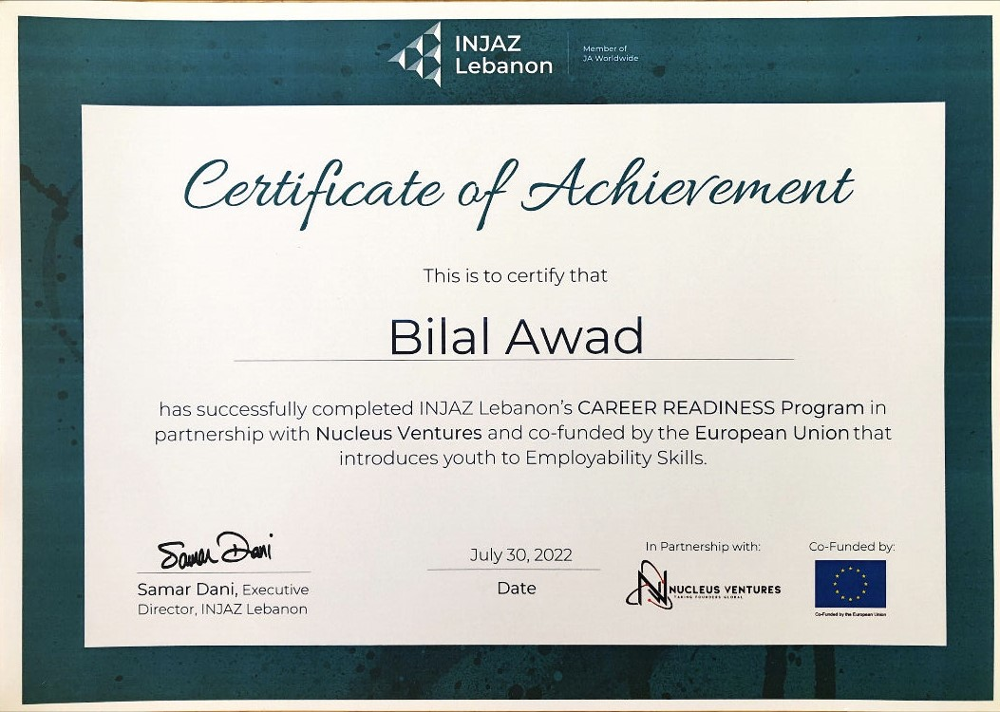
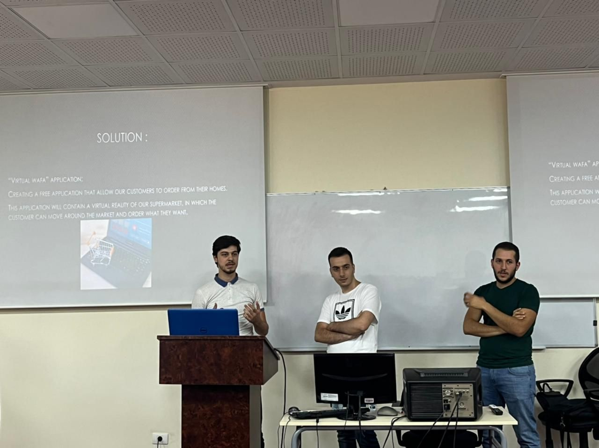

Intern – UNDP Renewable Energy Program
June 2022 – August 2022
- Constructed solar water heating systems for residential applications.
- Sized panels, inverters, and batteries for optimal performance.
- Mounted panels on suitable structures and selected appropriate balance-of-system (BOS) components.
- Applied knowledge in a Solar Pump Project to improve my village’s central water pump.
- Completed a Career Readiness Program focused on soft skills development for future career growth.
Skills learned:
- Renewable Energy
- Solar Systems
- System Design
- Team Work


